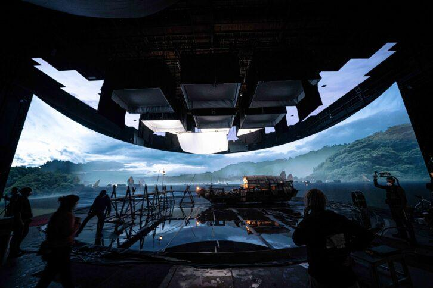

Launch Your Future as a Virtual Production Designer
Create movie magic with virtual sets and XR tech!
Pathway Snapshot
High School Courses | College Majors | Career Roles |
Digital Media Arts | Virtual Production | Virtual Production Designer |
Computer Science | Film & Media Arts | Virtual Production Artist |
Graphic Design | Animation | Virtual Production Supervisor |
Physics | Computer Graphics | Real-Time Environment Artist |
Video Production | Game Design | LED Volume Designer |
Math | Interactive Media | Technical Artist |
Women Who Lead the Way
Anna Valle
Visual Effects Supervisor, Industrial Light & Magic (ILM)
Photo Credit: IMDB
“Virtual production lets you see your imagination come to life instantly—it’s storytelling without limits.”
Anna Valle is a visual effects (VFX) supervisor at Industrial Light & Magic (ILM), one of the world’s leading visual effects and animation studios. She is recognized for her contributions to high-profile film and television productions that integrate cutting-edge CGI, compositing, and digital artistry. Her work embodies ILM’s reputation for pioneering innovation in visual storytelling.
Day in the Life
Daily Tasks | Tools & Technologies Used |
Designing digital environments for scenes | Unreal Engine |
Collaborating with directors and cinematographers | LED Volume Stages |
Testing lighting and camera angles in real time | Virtual Cameras |
Troubleshooting visual effects on set | Motion Capture Systems |
Syncing physical and digital assets | Maya, Blender |
Iterating scenes before final filming | Real-time Rendering Tools |
Mini-Activity: Try This!
Create a Virtual World Scene
- Download Unreal Engine (free for students)
- Build a simple environment (forest, city, or sci-fi room)
- Add a light source and move a virtual camera
- Imagine how an actor would perform inside this digital space
You’re doing real virtual production work—just like the pros!
Careers & Resources
Degree Program Finder:
Scholarships:
Summer Camps & Bootcamps:
Explore the Career:
You Belong Here
If you love movies, games, storytelling, art, or technology, Virtual Production Design could be your future.
You don’t have to choose between creativity and tech—you can build worlds, tell stories, and shape the future of entertainment all at once.
Your path is creative. Your future is powerful. And there’s a place for you here.
